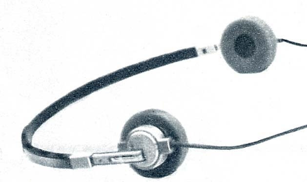
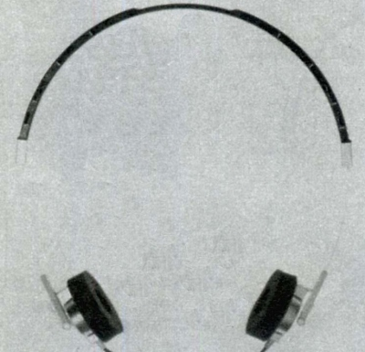
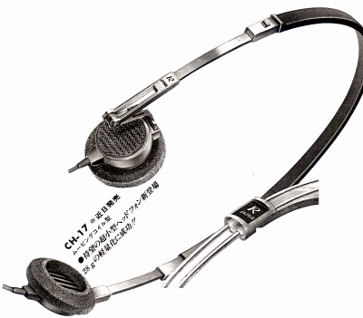

CH-17


■価格 4,500円■型式 ダイナミック型セミオープンタイプ■振動板 ■インピーダンス 8Ω±20%■再生周波数帯域 ■許容入力 50mW■感度 93.5ｄB/mW■コード 1.5m ステレオミニプラグ■重量 28g（コード含まず）■発売 1981年3月■販売終了 1987〜88年頃■備考

(雑誌広告に登場したCH-17のプロトタイプ。細部が製品版と異なる）
プリモのインデックスヘ